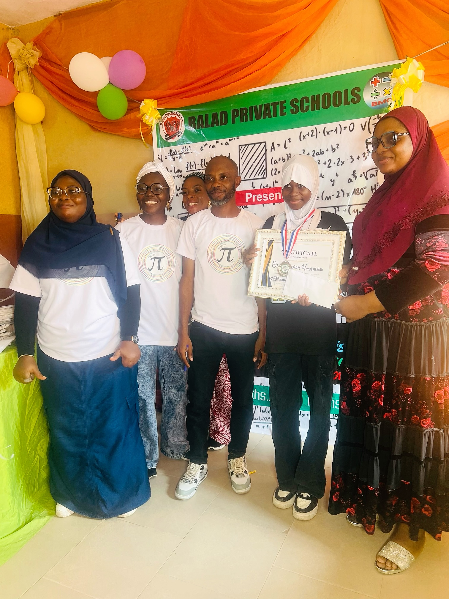

Strong Academic Foundation
Learners develop essential knowledge and skills across their stage of education.
Pre-Crèche • Crèche • Nursery • Primary • College • CBT Centre
"Nothing but Success"Our curriculum connects classroom knowledge with practical experiences, creativity, character and real-life skills.

Learners develop essential knowledge and skills across their stage of education.
Lessons connect classroom knowledge with activities, projects and real-life applications.
Education at Balad supports discipline, responsibility, confidence and good character.